02 — Análisis exploratorio (EDA)#
Objetivo del proyecto. Forecasting multi-horizonte (24 h, 72 h, 168 h) de
temperatura del aire temp_c sobre un panel nacional de 40 estaciones INMET
estratificado por las 5 macrorregiones IBGE, cubriendo 2018–2025 (frecuencia
horaria, tz-naive UTC).
0. Setup#
%load_ext autoreload
%autoreload 2
import json
import os
import sys
import warnings
from pathlib import Path
import matplotlib.pyplot as plt
import numpy as np
import pandas as pd
import seaborn as sns
warnings.filterwarnings("ignore", category=FutureWarning)
warnings.filterwarnings("ignore", category=UserWarning)
# Localización robusta de la raíz del repo (funciona si cwd es notebooks/ o repo/).
REPO_ROOT = Path.cwd().resolve()
while not (REPO_ROOT / "config").exists() and REPO_ROOT != REPO_ROOT.parent:
REPO_ROOT = REPO_ROOT.parent
sys.path.insert(0, str(REPO_ROOT))
# Helpers en src/utils/regions.py usan rutas relativas: alineamos cwd a repo root.
os.chdir(REPO_ROOT)
from src.data.split import split_dataframe
from src.utils import load_yaml, set_seed
from src.utils.regions import all_regions, region_color, region_color_map
cfg = load_yaml(REPO_ROOT / "config" / "config.yaml")
set_seed(cfg["project"]["seed"])
PROCESSED = REPO_ROOT / "data" / "processed"
INTERIM = REPO_ROOT / "data" / "interim"
FIG_DIR = REPO_ROOT / "results" / "figures" / "eda"
FIG_DIR.mkdir(parents=True, exist_ok=True)
# Estilo consistente de plotting.
sns.set_theme(style="whitegrid", context="notebook")
plt.rcParams.update({
"figure.dpi": 100,
"savefig.dpi": 120,
"savefig.bbox": "tight",
"axes.titlesize": 12,
"axes.labelsize": 10,
"legend.fontsize": 9,
})
REGION_PALETTE = region_color_map()
REGIONS = all_regions() # orden canónico IBGE
def savefig(fig, name: str) -> Path:
"""Guarda la figura en results/figures/eda/<name>.png a 120 dpi."""
out = FIG_DIR / f"{name}.png"
fig.savefig(out, dpi=120, bbox_inches="tight")
return out
print("REPO_ROOT:", REPO_ROOT)
print("Parquets en data/processed/:", len(sorted(PROCESSED.glob("*.parquet"))))
REPO_ROOT: C:\Users\sergi\Proyecto-final-Deep-learning
Parquets en data/processed/: 38
load_panel() — panel largo [datetime × estación]#
Lee los 40 parquets, hace join con stations.yaml (region/biome/koppen) y con
metadata.json (lat/lng/alt) y aplica el split temporal — devuelve sólo
train. Esto es la barrera explícita anti-leakage de nuestro EDA.
def _parse_metadata_json(path: Path) -> dict:
"""Lee metadata.json (latitude/longitude/altitude) tolerando claves con encoding raro.
Returns:
Dict con keys 'latitude', 'longitude', 'altitude' como floats (decimal coma → punto).
"""
if not path.exists():
return {"latitude": np.nan, "longitude": np.nan, "altitude": np.nan}
with open(path, encoding="utf-8") as f:
raw = json.load(f)
out: dict = {}
for k, v in raw.items():
ku = k.upper()
v_str = str(v).replace(",", ".").lstrip(";").strip()
try:
v_num = float(v_str)
except ValueError:
continue
if "LATITU" in ku:
out["latitude"] = v_num
elif "LONGIT" in ku:
out["longitude"] = v_num
elif "ALTIT" in ku:
out["altitude"] = v_num
out.setdefault("latitude", np.nan)
out.setdefault("longitude", np.nan)
out.setdefault("altitude", np.nan)
return out
TRAIN_YEARS = set(cfg["split"]["by_year"]["train_years"])
def load_panel(only_train: bool = True) -> pd.DataFrame:
"""Carga el panel completo de 40 estaciones en formato largo.
Args:
only_train: Si True, devuelve sólo años en ``cfg.split.by_year.train_years``.
Garantía anti-leakage del EDA. Algunas estaciones tienen
cobertura parcial (faltan 2024/2025), por eso filtramos por
año en lugar de usar ``split_dataframe`` que exigiría splits
no vacíos.
Returns:
DataFrame con MultiIndex (datetime, wmo) y columnas meteorológicas.
"""
frames = []
for path in sorted(PROCESSED.glob("*.parquet")):
wmo = path.stem
df = pd.read_parquet(path)
meta = _parse_metadata_json(INTERIM / wmo / "metadata.json")
df["wmo"] = wmo
df["latitude"] = meta["latitude"]
df["longitude"] = meta["longitude"]
df["altitude"] = meta["altitude"]
if only_train:
df = df[df.index.year.isin(TRAIN_YEARS)]
if len(df) == 0:
continue
frames.append(df)
panel = pd.concat(frames, axis=0)
panel.index.name = "datetime"
panel = panel.set_index("wmo", append=True).reorder_levels(["datetime", "wmo"])
return panel.sort_index()
PANEL = load_panel(only_train=True)
print("Panel shape:", PANEL.shape)
print("Rango temporal:", PANEL.index.get_level_values('datetime').min(),
"->", PANEL.index.get_level_values('datetime').max())
print("Estaciones:", PANEL.index.get_level_values('wmo').nunique())
Panel shape: (1993560, 30)
Rango temporal: 2018-01-01 00:00:00 -> 2023-12-31 23:00:00
Estaciones: 38
1. Definición y dimensiones del dataset#
n_rows = len(PANEL)
n_stations = PANEL.index.get_level_values("wmo").nunique()
n_cols = PANEL.shape[1]
years = sorted(PANEL.index.get_level_values("datetime").year.unique())
freq_h = pd.infer_freq(PANEL.xs(PANEL.index.get_level_values("wmo")[0], level="wmo").index)
resumen = pd.DataFrame({
"Métrica": [
"Estaciones (panel)",
"Años cubiertos (train)",
"Frecuencia",
"Filas totales",
"Columnas",
"Filas / estación (promedio)",
],
"Valor": [
n_stations,
f"{years[0]}–{years[-1]}",
freq_h or "h",
f"{n_rows:,}",
n_cols,
f"{n_rows // n_stations:,}",
],
})
resumen
| Métrica | Valor | |
|---|---|---|
| 0 | Estaciones (panel) | 38 |
| 1 | Años cubiertos (train) | 2018–2023 |
| 2 | Frecuencia | h |
| 3 | Filas totales | 1,993,560 |
| 4 | Columnas | 30 |
| 5 | Filas / estación (promedio) | 52,462 |
# Estaciones por región
by_region = (
PANEL.reset_index()
.groupby("region")["wmo"].nunique()
.reindex(REGIONS)
.rename("n_estaciones")
.to_frame()
)
by_region["share_%"] = (by_region["n_estaciones"] / by_region["n_estaciones"].sum() * 100).round(1)
by_region
| n_estaciones | share_% | |
|---|---|---|
| region | ||
| Norte | 7 | 18.4 |
| Nordeste | 8 | 21.1 |
| Centro-Oeste | 6 | 15.8 |
| Sudeste | 10 | 26.3 |
| Sul | 7 | 18.4 |
# Tabla de metadata por estación + cobertura (% no-NaN de temp_c en train)
from src.utils.regions import load_stations
stations_meta = pd.DataFrame(load_stations())[["code", "name", "uf", "region", "biome", "koppen_class"]]
stations_meta = stations_meta.rename(columns={"code": "wmo"}).set_index("wmo")
# Lat/lng/alt por estación
geo = (
PANEL[["latitude", "longitude", "altitude"]]
.groupby(level="wmo").first()
)
# Cobertura en train: % filas con temp_c no nulo
cov = (
PANEL["temp_c"].notna()
.groupby(level="wmo").mean()
.mul(100).round(1)
.rename("cobertura_%")
)
stations_table = stations_meta.join(geo).join(cov).sort_values(["region", "wmo"])
stations_table
| name | uf | region | biome | koppen_class | latitude | longitude | altitude | cobertura_% | |
|---|---|---|---|---|---|---|---|---|---|
| wmo | |||||||||
| A001 | BRASILIA | DF | Centro-Oeste | Cerrado | Aw | -15.789444 | -47.925833 | 1159.54 | 99.9 |
| A002 | GOIANIA | GO | Centro-Oeste | Cerrado | Aw | -16.642778 | -49.220000 | 770.00 | 99.8 |
| A719 | CORUMBA | MS | Centro-Oeste | Pantanal | Aw | -20.475556 | -55.783889 | 155.00 | 54.5 |
| A756 | CAMPO GRANDE | MS | Centro-Oeste | Cerrado | Aw | -20.444444 | -52.875556 | 338.00 | 96.8 |
| A901 | CUIABA | MT | Centro-Oeste | Cerrado | Aw | -15.559167 | -56.729444 | 240.00 | 94.6 |
| A923 | SINOP | MT | Centro-Oeste | Amazonia | Aw | -15.580000 | -54.381111 | 680.00 | 72.8 |
| A301 | SALVADOR - ONDINA | BA | Nordeste | Mata Atlantica | Af | -8.059167 | -34.959444 | 10.00 | 63.7 |
| A305 | BARREIRAS | BA | Nordeste | Cerrado | Aw | -3.832222 | -38.537778 | 26.45 | 95.2 |
| A309 | PETROLINA | PE | Nordeste | Caatinga | BSh | -8.416944 | -37.083333 | 680.70 | 77.6 |
| A312 | TERESINA | PI | Nordeste | Caatinga | Aw | -5.073889 | -42.806944 | 74.36 | 92.6 |
| A320 | MACEIO | AL | Nordeste | Mata Atlantica | As | -7.165833 | -34.815278 | 47.00 | 78.4 |
| A325 | SAO LUIS | MA | Nordeste | Mata Atlantica | Aw | -5.173056 | -39.287222 | 232.00 | 59.6 |
| A328 | RECIFE - CURADO | PE | Nordeste | Mata Atlantica | As | -7.836944 | -35.796111 | 418.00 | 87.7 |
| A340 | FORTALEZA | CE | Nordeste | Mata Atlantica | Aw | -5.626389 | -37.815000 | 150.00 | 81.5 |
| A018 | PALMAS | TO | Norte | Cerrado | Aw | -12.016667 | -48.550000 | 242.00 | 88.5 |
| A101 | MANAUS | AM | Norte | Amazonia | Am | -3.103333 | -60.016389 | 61.25 | 99.7 |
| A102 | RIO BRANCO | AC | Norte | Amazonia | Am | -9.357500 | -69.927222 | 187.00 | 85.5 |
| A104 | TEFE | AM | Norte | Amazonia | Af | -9.957778 | -68.165000 | 220.00 | 37.1 |
| A135 | PORTO VELHO | RO | Norte | Amazonia | Am | 2.816944 | -60.690833 | 94.00 | 68.7 |
| A201 | BELEM | PA | Norte | Amazonia | Af | -1.410278 | -48.438333 | 24.00 | 98.6 |
| A210 | MACAPA | AP | Norte | Amazonia | Am | -3.843611 | -50.638056 | 108.00 | 46.0 |
| A521 | BELO HORIZONTE - PAMPULHA | MG | Sudeste | Mata Atlantica | Cwa | -19.884167 | -43.969444 | 869.00 | 99.9 |
| A537 | UBERLANDIA | MG | Sudeste | Cerrado | Aw | -18.231111 | -43.648056 | 1356.00 | 97.3 |
| A615 | VITORIA | ES | Sudeste | Mata Atlantica | Aw | -20.636389 | -40.741389 | 35.00 | 90.7 |
| A621 | SAO PAULO - INTERLAGOS | SP | Sudeste | Mata Atlantica | Cfa | -22.860833 | -43.411111 | 45.00 | 99.2 |
| A627 | PETROPOLIS | RJ | Sudeste | Mata Atlantica | Cwb | -22.867500 | -43.101944 | 6.00 | 98.7 |
| A634 | LINHARES | ES | Sudeste | Mata Atlantica | Aw | -20.466944 | -40.404167 | 25.00 | 93.2 |
| A652 | RIO DE JANEIRO - JACAREPAGUA | RJ | Sudeste | Mata Atlantica | Aw | -22.988333 | -43.190278 | 42.00 | 99.3 |
| A701 | SAO PAULO - MIRANTE | SP | Sudeste | Mata Atlantica | Cfa | -23.483333 | -46.616667 | 792.06 | 99.8 |
| A711 | RIBEIRAO PRETO | SP | Sudeste | Cerrado | Cwa | -21.979722 | -47.883333 | 863.00 | 97.2 |
| A744 | CAMPINAS | SP | Sudeste | Mata Atlantica | Cwa | -23.951944 | -46.530556 | 891.00 | 91.6 |
| A801 | PORTO ALEGRE - JARDIM BOTANICO | RS | Sul | Pampa | Cfa | -30.050000 | -51.166667 | 46.97 | 99.8 |
| A815 | CHAPECO | SC | Sul | Mata Atlantica | Cfa | -28.275556 | -49.934444 | 1410.00 | 98.1 |
| A839 | SANTA MARIA | RS | Sul | Pampa | Cfa | -28.229444 | -52.403889 | 684.05 | 99.0 |
| A861 | FLORIANOPOLIS | SC | Sul | Mata Atlantica | Cfa | -26.937500 | -50.146389 | 592.00 | 75.9 |
| A876 | CURITIBA | PR | Sul | Mata Atlantica | Cfb | -26.417222 | -52.348889 | 980.00 | 94.9 |
| A883 | PELOTAS | RS | Sul | Pampa | Cfa | -28.653333 | -53.111944 | 456.00 | 98.2 |
| A899 | URUGUAIANA | RS | Sul | Pampa | Cfa | -33.741667 | -53.371389 | 26.00 | 84.5 |
Decisión de preprocesamiento#
Mantener el panel balanceado por región sólo si
cobertura_% ≥ 90por estación; las que caigan por debajo se marcarán para exclusión condicional en sección 3.station_id(entero, ya generado enprocess.py) será la clave para el embedding del modelo global.Lat/lng/alt vienen de
metadata.jsony se incorporan como features estáticas por estación (no dinámicas en el tiempo).
Impacto en la arquitectura#
40 estaciones × ~52 584 horas (train) ⇒ ~2.1 M ejemplos crudos antes de ventaneo. Apto para entrenamiento global con un único modelo + embedding de estación.
Frecuencia horaria estricta confirmada ⇒ el ventaneo es de paso fijo (sin re-resampling on-the-fly).
Las 5 regiones tienen 6–10 estaciones cada una: suficiente diversidad climática para que un encoder compartido aprenda representaciones generalizables.
2. Análisis de la variable objetivo temp_c#
temp = PANEL["temp_c"].dropna()
# Histograma global + por región (5 subplots compartiendo eje X)
fig, axes = plt.subplots(2, 3, figsize=(14, 7), sharex=True)
ax_glob = axes[0, 0]
ax_glob.hist(temp.values, bins=60, color="#444", alpha=0.85)
ax_glob.axvline(temp.mean(), color="red", linestyle="--", lw=1.2, label=f"media={temp.mean():.1f}")
ax_glob.axvline(temp.median(), color="blue", linestyle=":", lw=1.2, label=f"mediana={temp.median():.1f}")
ax_glob.set_title("Global (40 estaciones)")
ax_glob.set_ylabel("frecuencia")
ax_glob.legend()
regions_panel = PANEL.reset_index()
for ax, region in zip(axes.flat[1:], REGIONS):
s = regions_panel.loc[regions_panel["region"] == region, "temp_c"].dropna()
ax.hist(s.values, bins=60, color=region_color(region), alpha=0.85)
ax.axvline(s.mean(), color="red", linestyle="--", lw=1.0)
ax.axvline(s.median(), color="blue", linestyle=":", lw=1.0)
ax.set_title(f"{region} (μ={s.mean():.1f}, σ={s.std():.1f})")
fig.suptitle("Distribución de temp_c por región — train (2018–2023)", y=1.02)
fig.supxlabel("temp_c (°C)")
plt.tight_layout()
savefig(fig, "02_target_hist_por_region")
plt.show()
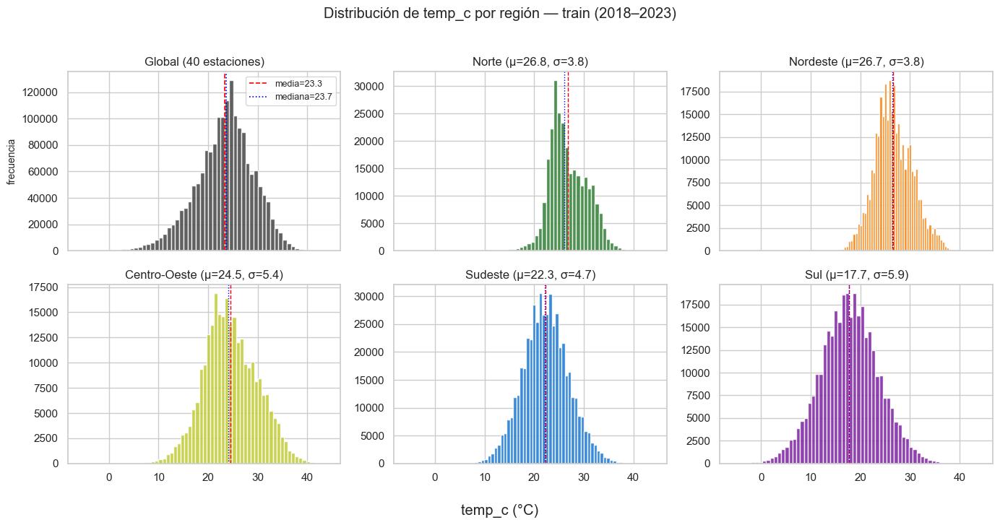
# Boxplot por región y por bioma
fig, (ax1, ax2) = plt.subplots(1, 2, figsize=(14, 5))
df_box = PANEL.reset_index().dropna(subset=["temp_c"])
sns.boxplot(
data=df_box, x="region", y="temp_c", order=REGIONS,
palette=REGION_PALETTE, ax=ax1, showfliers=False,
)
ax1.set_title("temp_c por región (sin outliers en el plot)")
ax1.set_xlabel("")
biomes_order = sorted(df_box["biome"].unique())
sns.boxplot(data=df_box, x="biome", y="temp_c", order=biomes_order, ax=ax2, showfliers=False)
ax2.set_title("temp_c por bioma")
ax2.set_xlabel("")
ax2.tick_params(axis="x", rotation=30)
plt.tight_layout()
savefig(fig, "02_target_boxplot_region_bioma")
plt.show()
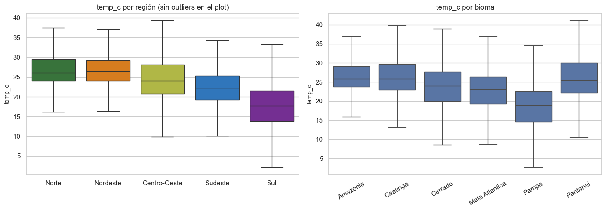
# Estadísticos descriptivos por región
desc = (
df_box.groupby("region")["temp_c"]
.describe(percentiles=[0.01, 0.25, 0.5, 0.75, 0.99])
.reindex(REGIONS)
.round(2)
)
desc
| count | mean | std | min | 1% | 25% | 50% | 75% | 99% | max | |
|---|---|---|---|---|---|---|---|---|---|---|
| region | ||||||||||
| Norte | 275642.0 | 26.76 | 3.76 | -5.0 | 18.4 | 24.1 | 26.1 | 29.5 | 35.6 | 40.6 |
| Nordeste | 334597.0 | 26.66 | 3.79 | 13.1 | 18.4 | 24.1 | 26.4 | 29.3 | 36.0 | 40.1 |
| Centro-Oeste | 272644.0 | 24.49 | 5.40 | -0.4 | 12.1 | 20.8 | 24.1 | 28.2 | 37.0 | 44.2 |
| Sudeste | 503880.0 | 22.31 | 4.65 | 2.8 | 11.6 | 19.2 | 22.2 | 25.3 | 33.6 | 41.7 |
| Sul | 342058.0 | 17.73 | 5.88 | -5.8 | 3.8 | 13.8 | 17.7 | 21.6 | 31.4 | 39.7 |
# Eventos extremos: percentiles 1 y 99 globales y por región
p_low_global, p_high_global = np.percentile(temp.values, [1, 99])
extremos_region = (
df_box.groupby("region")["temp_c"]
.agg(p01=lambda s: np.percentile(s, 1), p99=lambda s: np.percentile(s, 99))
.reindex(REGIONS)
.round(2)
)
extremos_region["amplitud_p99-p01"] = (extremos_region["p99"] - extremos_region["p01"]).round(2)
print(f"Global: p01={p_low_global:.2f} °C, p99={p_high_global:.2f} °C")
extremos_region
Global: p01=7.80 °C, p99=35.40 °C
| p01 | p99 | amplitud_p99-p01 | |
|---|---|---|---|
| region | |||
| Norte | 18.4 | 35.6 | 17.2 |
| Nordeste | 18.4 | 36.0 | 17.6 |
| Centro-Oeste | 12.1 | 37.0 | 24.9 |
| Sudeste | 11.6 | 33.6 | 22.0 |
| Sul | 3.8 | 31.4 | 27.6 |
# Visualización de eventos extremos: cuánto del volumen total cae fuera de [p01, p99]
n_extremos = ((temp < p_low_global) | (temp > p_high_global)).sum()
print(f"% horas con temp_c en colas extremas (global): {100*n_extremos/len(temp):.2f}%")
# Por región
fig, ax = plt.subplots(figsize=(10, 4))
extremos_region[["p01", "p99"]].plot(kind="bar", ax=ax,
color=["#1976D2", "#D32F2F"])
ax.set_title("Percentiles 1 y 99 de temp_c por región — define el régimen de eventos extremos")
ax.set_ylabel("temp_c (°C)")
ax.set_xlabel("")
plt.xticks(rotation=0)
plt.tight_layout()
savefig(fig, "02_extremos_p01_p99")
plt.show()
% horas con temp_c en colas extremas (global): 1.93%
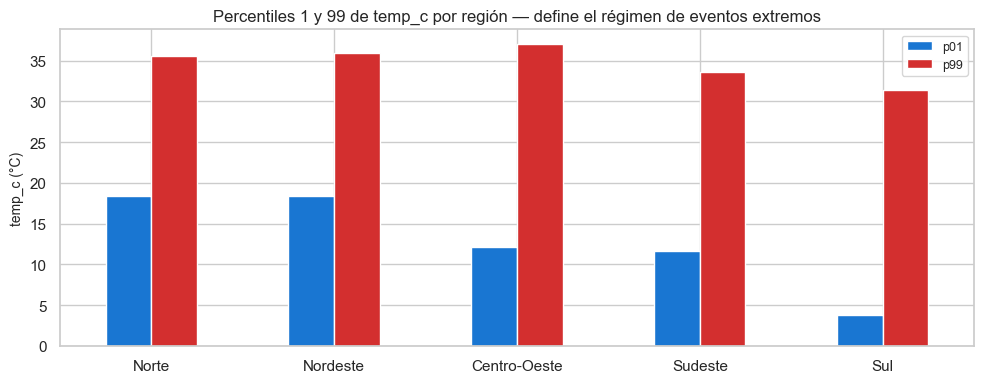
Decisión de preprocesamiento#
No se balancea artificialmente la distribución del target: en regresión la cola es información, no ruido. En lugar de eso se incorpora una columna
is_extreme(flag paratemp_c < p01o> p99) calculada sobre estadísticos de train y reutilizada en val/test.Estandarización por estación (no global) en sección de scaling — los rangos varían 30 °C entre regiones (ej. Norte ~22–32, Sul ~5–35).
Conservar las muestras extremas sin clipping; los rangos físicos ya cortan valores imposibles (-10/50 °C).
Impacto en la arquitectura#
En forecasting de regresión no hay “desbalance categórico”. Sí hay desbalance de eventos extremos: el modelo tenderá a sub-predecir colas si la loss es MSE puro.
Loss recomendada:
Huber(robusta a outliers) oquantile loss multi-percentil(predice p10/p50/p90 simultáneo) para capturar incertidumbre en las colas.Embedding por
station_idpermite al modelo aprender el nivel base por estación; las features cíclicas capturan la estacionalidad común.
3. Calidad del dataset#
# Heatmap de % NaN en temp_c por (estación × mes-año)
panel_temp = PANEL["temp_c"].copy()
nan_panel = (
panel_temp.isna()
.groupby([
pd.Grouper(level="datetime", freq="MS"),
pd.Grouper(level="wmo"),
])
.mean()
.unstack(level="wmo")
.mul(100)
)
fig, ax = plt.subplots(figsize=(16, 8))
im = ax.imshow(nan_panel.T.values, aspect="auto", cmap="magma_r", vmin=0, vmax=100)
ax.set_yticks(range(nan_panel.shape[1]))
ax.set_yticklabels(nan_panel.columns, fontsize=7)
xt = np.arange(0, nan_panel.shape[0], 6)
ax.set_xticks(xt)
ax.set_xticklabels([nan_panel.index[i].strftime("%Y-%m") for i in xt], rotation=45, ha="right")
ax.set_title("% NaN en temp_c por estación × mes (train 2018–2023)")
plt.colorbar(im, ax=ax, label="% NaN")
plt.tight_layout()
savefig(fig, "03_heatmap_nan_temp_c")
plt.show()
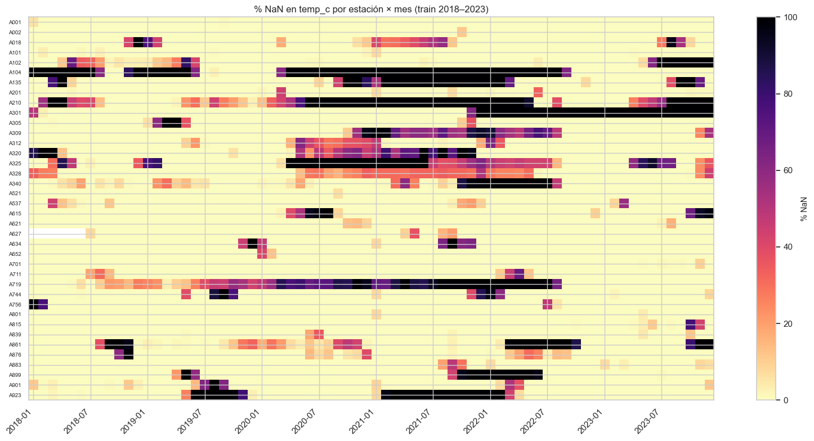
# Tabla: % faltantes por columna (numéricas) y top 10 estaciones con más NaN en temp_c
num_cols = PANEL.select_dtypes(include="number").columns
nan_por_col = (PANEL[num_cols].isna().mean() * 100).round(2).sort_values(ascending=False)
print("% NaN por columna (todas las estaciones agregadas):")
print(nan_por_col.head(15).to_string())
% NaN por columna (todas las estaciones agregadas):
radiation_kj_m2 29.45
precip_mm 17.48
wind_dir_deg 15.86
dew_point_min_c 15.40
dew_point_max_c 15.39
humidity_max_pct 15.38
humidity_min_pct 15.38
wind_gust_ms 15.29
dew_point_c 15.27
humidity_pct 15.27
wind_speed_ms 15.19
temp_min_c 13.36
temp_max_c 13.36
pressure_max_mb 13.34
pressure_min_mb 13.33
top_nan_station = (
PANEL["temp_c"].isna().groupby(level="wmo").mean().mul(100).round(2).sort_values(ascending=False).head(10)
).rename("nan_temp_c_%").to_frame()
top_nan_station = top_nan_station.join(stations_meta[["region", "name"]])
top_nan_station
| nan_temp_c_% | region | name | |
|---|---|---|---|
| wmo | |||
| A104 | 62.91 | Norte | TEFE |
| A210 | 53.99 | Norte | MACAPA |
| A719 | 45.51 | Centro-Oeste | CORUMBA |
| A325 | 40.40 | Nordeste | SAO LUIS |
| A301 | 36.32 | Nordeste | SALVADOR - ONDINA |
| A135 | 31.31 | Norte | PORTO VELHO |
| A923 | 27.22 | Centro-Oeste | SINOP |
| A861 | 24.07 | Sul | FLORIANOPOLIS |
| A309 | 22.40 | Nordeste | PETROLINA |
| A320 | 21.58 | Nordeste | MACEIO |
# Duplicados temporales: ¿hay (datetime, wmo) repetidos? Ya garantizado por process.py, pero verifica.
dup_count = PANEL.index.duplicated().sum()
print(f"Filas con (datetime, wmo) duplicado: {dup_count}")
# Valores físicamente imposibles que pasaron el clean
out_of_range = (
(PANEL["temp_c"].dropna() > 50) | (PANEL["temp_c"].dropna() < -20)
).sum()
print(f"Valores temp_c > 50 ó < -20 °C en train: {out_of_range}")
# Otras señales: humedad fuera [0,100], presión fuera [800,1100]
print(f"humidity_pct fuera [0,100]: { ((PANEL['humidity_pct'].dropna() < 0) | (PANEL['humidity_pct'].dropna() > 100)).sum() }")
print(f"pressure_mb fuera [800,1100]: { ((PANEL['pressure_mb'].dropna() < 800) | (PANEL['pressure_mb'].dropna() > 1100)).sum() }")
Filas con (datetime, wmo) duplicado: 0
Valores temp_c > 50 ó < -20 °C en train: 0
humidity_pct fuera [0,100]: 0
pressure_mb fuera [800,1100]: 0
# Gaps largos (> 24 h consecutivas sin temp_c) por estación
def long_gaps_per_station(s: pd.Series, threshold_h: int = 24) -> int:
is_nan = s.isna().to_numpy()
if not is_nan.any():
return 0
edges = np.diff(np.concatenate([[0], is_nan.astype(int), [0]]))
starts = np.where(edges == 1)[0]
ends = np.where(edges == -1)[0]
return int(((ends - starts) > threshold_h).sum())
gap_summary = (
PANEL["temp_c"].groupby(level="wmo")
.apply(lambda s: long_gaps_per_station(s.droplevel("wmo"), 24))
.rename("gaps_>24h")
.to_frame()
.join(stations_meta[["region", "name"]])
.sort_values("gaps_>24h", ascending=False)
)
gap_summary.head(15)
| gaps_>24h | region | name | |
|---|---|---|---|
| wmo | |||
| A309 | 77 | Nordeste | PETROLINA |
| A719 | 39 | Centro-Oeste | CORUMBA |
| A325 | 33 | Nordeste | SAO LUIS |
| A210 | 27 | Norte | MACAPA |
| A320 | 20 | Nordeste | MACEIO |
| A861 | 19 | Sul | FLORIANOPOLIS |
| A340 | 16 | Nordeste | FORTALEZA |
| A018 | 16 | Norte | PALMAS |
| A876 | 15 | Sul | CURITIBA |
| A615 | 15 | Sudeste | VITORIA |
| A744 | 13 | Sudeste | CAMPINAS |
| A634 | 13 | Sudeste | LINHARES |
| A312 | 9 | Nordeste | TERESINA |
| A901 | 9 | Centro-Oeste | CUIABA |
| A711 | 9 | Sudeste | RIBEIRAO PRETO |
# Tabla resumen: estaciones candidatas a exclusión si cobertura < 90%
_cov_join = cov.to_frame().join(stations_meta[["region", "name"]])
candidatas_excluir = _cov_join[_cov_join["cobertura_%"] < 90].sort_values("cobertura_%")
print(f"Estaciones con cobertura < 90 %: {len(candidatas_excluir)}")
candidatas_excluir
Estaciones con cobertura < 90 %: 15
| cobertura_% | region | name | |
|---|---|---|---|
| wmo | |||
| A104 | 37.1 | Norte | TEFE |
| A210 | 46.0 | Norte | MACAPA |
| A719 | 54.5 | Centro-Oeste | CORUMBA |
| A325 | 59.6 | Nordeste | SAO LUIS |
| A301 | 63.7 | Nordeste | SALVADOR - ONDINA |
| A135 | 68.7 | Norte | PORTO VELHO |
| A923 | 72.8 | Centro-Oeste | SINOP |
| A861 | 75.9 | Sul | FLORIANOPOLIS |
| A309 | 77.6 | Nordeste | PETROLINA |
| A320 | 78.4 | Nordeste | MACEIO |
| A340 | 81.5 | Nordeste | FORTALEZA |
| A899 | 84.5 | Sul | URUGUAIANA |
| A102 | 85.5 | Norte | RIO BRANCO |
| A328 | 87.7 | Nordeste | RECIFE - CURADO |
| A018 | 88.5 | Norte | PALMAS |
Decisión de preprocesamiento#
Mantener todas las estaciones con cobertura ≥ 90 %; las que estén por debajo se marcan en una lista negra exportable a
config/exclude_stations.yamly se decide caso a caso.Los gaps > 24 h ya quedaron sin imputar tras
process.py(ffill limit=6). Para entrenamiento, las ventanas que contengan NaN entemp_cse descartan enmake_windows(ya implementado).No hay duplicados temporales (
process.pylos deduplica conkeep="first"); confirmado en celda anterior.
Impacto en la arquitectura#
Estaciones con muchos gaps largos producen menos ventanas de entrenamiento válidas. Para mantener el panel balanceado, se considerará muestreo proporcional inverso (estaciones con menos ventanas válidas reciben mayor peso por época) sólo si la inspección por región muestra desbalance dañino (sección 4).
La presencia de NaN residual implica que el
Datasetde PyTorch debe filtrar ventanas inválidas — no rellenar con0(falsearía la señal) ni con la media (introduciría sesgo a la moda climática).
4. Identificación de sesgos#
# Sesgo de representación: horas válidas por región
horas_validas = (
PANEL["temp_c"].notna()
.groupby(PANEL.reset_index().set_index(PANEL.index)["region"])
.sum()
.reindex(REGIONS)
)
n_estaciones = by_region["n_estaciones"]
balance = pd.DataFrame({
"n_estaciones": n_estaciones,
"horas_validas": horas_validas.values,
"horas_validas_por_estacion": (horas_validas.values / n_estaciones.values).astype(int),
})
balance["share_horas_%"] = (balance["horas_validas"] / balance["horas_validas"].sum() * 100).round(1)
balance
| n_estaciones | horas_validas | horas_validas_por_estacion | share_horas_% | |
|---|---|---|---|---|
| region | ||||
| Norte | 7 | 275642 | 39377 | 15.9 |
| Nordeste | 8 | 334597 | 41824 | 19.4 |
| Centro-Oeste | 6 | 272644 | 45440 | 15.8 |
| Sudeste | 10 | 503880 | 50388 | 29.1 |
| Sul | 7 | 342058 | 48865 | 19.8 |
fig, ax = plt.subplots(figsize=(10, 4))
balance["share_horas_%"].plot(kind="bar", ax=ax,
color=[region_color(r) for r in balance.index])
ax.set_title("Sesgo de representación: % de horas válidas por región (train)")
ax.set_ylabel("% del total de horas válidas")
ax.set_xlabel("")
plt.xticks(rotation=0)
plt.tight_layout()
savefig(fig, "04_sesgo_representacion")
plt.show()
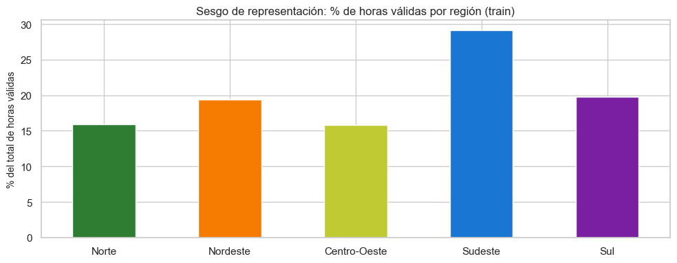
# Sesgo temporal: tramos donde una región completa no reporta
panel_reg = PANEL.reset_index()
mensual = (
panel_reg.assign(month=panel_reg["datetime"].dt.to_period("M"))
.groupby(["month", "region"])["temp_c"].apply(lambda s: s.notna().mean())
.unstack("region")
.reindex(columns=REGIONS)
)
mensual.index = mensual.index.to_timestamp()
fig, ax = plt.subplots(figsize=(14, 5))
for region in REGIONS:
ax.plot(mensual.index, mensual[region], color=region_color(region), label=region, lw=1.5)
ax.axhline(0.9, color="red", linestyle="--", lw=0.8, label="umbral 90 %")
ax.set_title("Cobertura mensual de temp_c por región (train) — detección de tramos atípicos")
ax.set_ylabel("fracción de horas válidas")
ax.legend(loc="lower left", ncol=3)
plt.tight_layout()
savefig(fig, "04_sesgo_temporal_region")
plt.show()
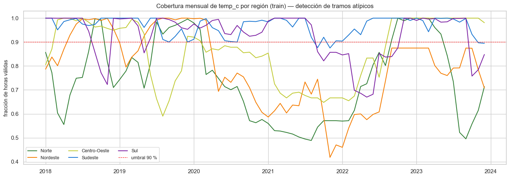
# Sesgo geográfico: histograma de altitudes y latitudes de las 40 estaciones
geo_one = stations_table[["region", "latitude", "longitude", "altitude"]].dropna()
fig, (ax1, ax2) = plt.subplots(1, 2, figsize=(13, 4))
for region in REGIONS:
sub = geo_one[geo_one["region"] == region]
ax1.scatter(sub["latitude"], sub["altitude"], color=region_color(region),
label=region, s=70, edgecolor="black", linewidth=0.5)
ax1.set_xlabel("latitud (°)")
ax1.set_ylabel("altitud (m)")
ax1.set_title("Estaciones en el plano latitud × altitud")
ax1.legend(fontsize=8)
ax2.hist(geo_one["altitude"], bins=20, color="#666")
ax2.set_xlabel("altitud (m)")
ax2.set_ylabel("# estaciones")
ax2.set_title("Distribución de altitudes")
plt.tight_layout()
savefig(fig, "04_sesgo_geografico")
plt.show()
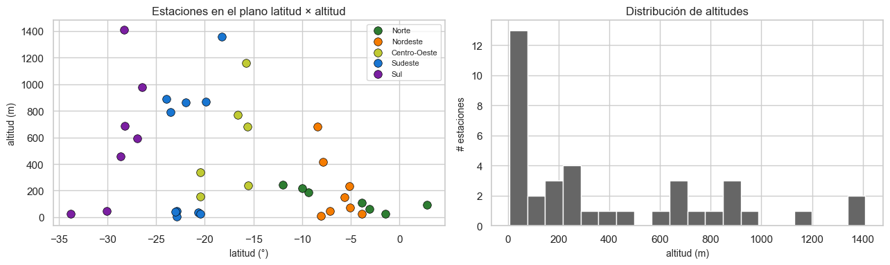
# Sesgo climático: distribución Köppen × bioma × región
fig, axes = plt.subplots(1, 2, figsize=(14, 4))
stations_meta_full = stations_table.copy()
koppen_counts = stations_meta_full.groupby(["region", "koppen_class"]).size().unstack(fill_value=0).reindex(REGIONS)
biome_counts = stations_meta_full.groupby(["region", "biome"]).size().unstack(fill_value=0).reindex(REGIONS)
koppen_counts.plot(kind="bar", stacked=True, ax=axes[0], colormap="tab20")
axes[0].set_title("Clases Köppen por región")
axes[0].set_ylabel("# estaciones")
axes[0].legend(title="Köppen", fontsize=7, ncol=2)
axes[0].tick_params(axis="x", rotation=0)
biome_counts.plot(kind="bar", stacked=True, ax=axes[1], colormap="tab20b")
axes[1].set_title("Biomas por región")
axes[1].legend(title="Bioma", fontsize=7)
axes[1].tick_params(axis="x", rotation=0)
plt.tight_layout()
savefig(fig, "04_sesgo_climatico")
plt.show()
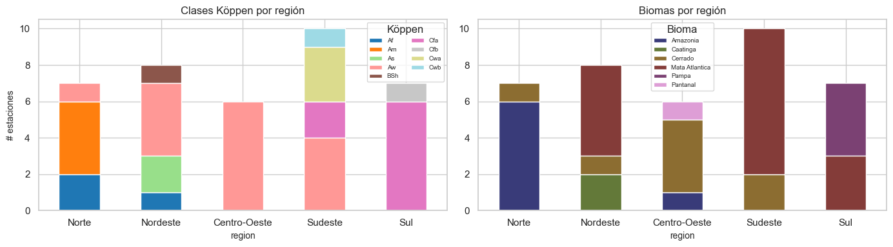
Decisión de preprocesamiento#
El panel no es uniforme: Sudeste y Nordeste aportan más estaciones (10 y 9) que Norte/Centro-Oeste (8 y 6) y Sul (7) → las regiones con menos estaciones generan menos ejemplos.
En el DataLoader, usar
WeightedRandomSamplercon peso1 / n_horas_validas_por_regionpara muestreo balanceado por región durante entrenamiento.Las features estáticas
region,biome,koppen_classse convierten en embeddings categóricos; la cardinalidad pequeña (5 / 7 / 9) las hace baratas y muy informativas.
Impacto en la arquitectura#
Embedding de región (
dim=4), embedding de bioma (dim=4), embedding de Köppen (dim=4) — concatenados a las features dinámicas.Lat/long/alt entran como features estáticas estandarizadas (no embedding) — la geografía continua aporta información ordinal.
Si una región queda subrepresentada en eventos extremos, el modelo global no aprenderá bien sus colas → conviene reportar métricas por región además de la global en el benchmark.
5. Análisis temporal#
Seleccionamos de una estación representativa por región para visualizaciones, descomposición STL, ADF, ACF/PACF y FFT:
# 1 estación representativa por región (priorizando coverage alto)
def representative_per_region() -> dict[str, str]:
out: dict[str, str] = {}
for region in REGIONS:
candidatas = stations_table[stations_table["region"] == region].sort_values("cobertura_%", ascending=False)
out[region] = candidatas.index[0]
return out
REPS = representative_per_region()
REPS
{'Norte': 'A101',
'Nordeste': 'A305',
'Centro-Oeste': 'A001',
'Sudeste': 'A521',
'Sul': 'A801'}
5.1 Visualización de la serie#
def serie_estacion(wmo: str) -> pd.Series:
return PANEL.xs(wmo, level="wmo")["temp_c"]
fig, axes = plt.subplots(5, 1, figsize=(14, 12), sharex=True)
for ax, (region, wmo) in zip(axes, REPS.items()):
s = serie_estacion(wmo)
ax.plot(s.index, s.values, color=region_color(region), lw=0.4, alpha=0.7)
daily = s.resample("D").mean()
ax.plot(daily.index, daily.values, color="black", lw=0.7, label="media diaria")
ax.set_title(f"{region} — {wmo} ({stations_meta.loc[wmo, 'name']})")
ax.set_ylabel("temp_c (°C)")
ax.legend(loc="upper right", fontsize=8)
plt.tight_layout()
savefig(fig, "05_1_series_8anos_5reps")
plt.show()

# Resampleo a media diaria, mensual y anual sobre la representativa de Sudeste (A701)
wmo = REPS["Sudeste"]
s = serie_estacion(wmo).dropna()
fig, axes = plt.subplots(3, 1, figsize=(13, 8), sharex=True)
for ax, freq, label in zip(axes, ["D", "MS", "YS"], ["diaria", "mensual", "anual"]):
res = s.resample(freq).mean()
ax.plot(res.index, res.values, color=region_color("Sudeste"), lw=1.0)
ax.set_title(f"{wmo} — media {label}")
ax.set_ylabel("temp_c (°C)")
plt.tight_layout()
savefig(fig, "05_1_resampleo_diaria_mensual_anual")
plt.show()

5.2 Descomposición STL (sobre serie diaria, period=365)#
from statsmodels.tsa.seasonal import STL
stl_results = {}
fig, axes = plt.subplots(5, 4, figsize=(15, 14), sharex="col")
for row, (region, wmo) in enumerate(REPS.items()):
s_daily = serie_estacion(wmo).resample("D").mean().interpolate(method="time")
s_daily = s_daily.dropna()
if len(s_daily) < 365 * 2:
continue
stl = STL(s_daily, period=365, robust=True).fit()
stl_results[region] = stl
var_obs = s_daily.var()
var_trend = stl.trend.var()
var_seas = stl.seasonal.var()
var_resid = stl.resid.var()
axes[row, 0].plot(s_daily.index, s_daily.values, color=region_color(region), lw=0.7)
axes[row, 0].set_ylabel(region, fontsize=10)
axes[row, 0].set_title(f"{wmo} — observada" if row == 0 else "")
axes[row, 1].plot(stl.trend.index, stl.trend.values, color="black", lw=0.8)
axes[row, 1].set_title(f"tendencia ({100*var_trend/var_obs:.0f}%)" if row == 0 else f"({100*var_trend/var_obs:.0f}%)")
axes[row, 2].plot(stl.seasonal.index, stl.seasonal.values, color="green", lw=0.5)
axes[row, 2].set_title(f"estacional ({100*var_seas/var_obs:.0f}%)" if row == 0 else f"({100*var_seas/var_obs:.0f}%)")
axes[row, 3].plot(stl.resid.index, stl.resid.values, color="grey", lw=0.3)
axes[row, 3].set_title(f"residuo ({100*var_resid/var_obs:.0f}%)" if row == 0 else f"({100*var_resid/var_obs:.0f}%)")
fig.suptitle("STL por región (serie diaria, period=365) — % varianza explicada en títulos", y=1.001)
plt.tight_layout()
savefig(fig, "05_2_stl_por_region")
plt.show()

5.3 Estacionariedad — Test ADF#
from statsmodels.tsa.stattools import adfuller
ADF_ALPHA = 0.05
def adf_row(name: str, s: pd.Series) -> dict:
s = s.dropna()
# truncar para velocidad: 2 años horarios
if len(s) > 24 * 365 * 2:
s = s.iloc[: 24 * 365 * 2]
try:
stat, p, *_ = adfuller(s.values, autolag="AIC", maxlag=48)
except Exception as exc:
return {"transform": name, "stat": np.nan, "p_value": np.nan, "estacionaria": f"err:{exc}"}
return {
"transform": name,
"stat": round(stat, 3),
"p_value": round(p, 5),
"estacionaria": "sí" if p < ADF_ALPHA else "no",
}
adf_rows = []
for region, wmo in REPS.items():
s = serie_estacion(wmo).dropna()
adf_rows.append({"region": region, "wmo": wmo, **adf_row("original", s)})
adf_rows.append({"region": region, "wmo": wmo, **adf_row("diff(1)", s.diff().dropna())})
adf_rows.append({"region": region, "wmo": wmo, **adf_row("diff(24)", s.diff(24).dropna())})
adf_df = pd.DataFrame(adf_rows)
adf_df
| region | wmo | transform | stat | p_value | estacionaria | |
|---|---|---|---|---|---|---|
| 0 | Norte | A101 | original | -9.092 | 0.0 | sí |
| 1 | Norte | A101 | diff(1) | -27.230 | 0.0 | sí |
| 2 | Norte | A101 | diff(24) | -20.997 | 0.0 | sí |
| 3 | Nordeste | A305 | original | -8.351 | 0.0 | sí |
| 4 | Nordeste | A305 | diff(1) | -29.174 | 0.0 | sí |
| 5 | Nordeste | A305 | diff(24) | -23.743 | 0.0 | sí |
| 6 | Centro-Oeste | A001 | original | -6.826 | 0.0 | sí |
| 7 | Centro-Oeste | A001 | diff(1) | -25.918 | 0.0 | sí |
| 8 | Centro-Oeste | A001 | diff(24) | -20.024 | 0.0 | sí |
| 9 | Sudeste | A521 | original | -7.253 | 0.0 | sí |
| 10 | Sudeste | A521 | diff(1) | -23.412 | 0.0 | sí |
| 11 | Sudeste | A521 | diff(24) | -18.718 | 0.0 | sí |
| 12 | Sul | A801 | original | -7.442 | 0.0 | sí |
| 13 | Sul | A801 | diff(1) | -21.657 | 0.0 | sí |
| 14 | Sul | A801 | diff(24) | -17.963 | 0.0 | sí |
5.4 Dependencia temporal — ACF y PACF (lag 1..168)#
from statsmodels.graphics.tsaplots import plot_acf, plot_pacf
fig, axes = plt.subplots(5, 2, figsize=(14, 14))
for row, (region, wmo) in enumerate(REPS.items()):
s = serie_estacion(wmo).dropna()
if len(s) > 24 * 365 * 2:
s = s.iloc[: 24 * 365 * 2]
plot_acf(s, lags=168, ax=axes[row, 0], color=region_color(region))
axes[row, 0].set_title(f"{region} — {wmo} — ACF (1..168)")
plot_pacf(s.diff().dropna(), lags=72, ax=axes[row, 1], method="ywm")
axes[row, 1].set_title(f"{region} — {wmo} — PACF de diff(1) (1..72)")
plt.tight_layout()
savefig(fig, "05_4_acf_pacf_por_region")
plt.show()

5.5 Análisis de outliers#
def modified_z(s: pd.Series) -> pd.Series:
s = s.dropna()
median = s.median()
mad = (s - median).abs().median()
if mad == 0:
return pd.Series(np.zeros(len(s)), index=s.index)
return 0.6745 * (s - median) / mad
outlier_rows = []
for wmo in PANEL.index.get_level_values("wmo").unique():
s = serie_estacion(wmo).dropna()
z = modified_z(s)
iqr_q1, iqr_q3 = np.percentile(s, [25, 75])
iqr = iqr_q3 - iqr_q1
iqr_low = iqr_q1 - 1.5 * iqr
iqr_high = iqr_q3 + 1.5 * iqr
n = len(s)
outlier_rows.append({
"wmo": wmo,
"region": stations_meta.loc[wmo, "region"],
"n": n,
"out_z>3.5_%": round(100 * (z.abs() > 3.5).mean(), 2),
"out_iqr_%": round(100 * (((s < iqr_low) | (s > iqr_high)).mean()), 2),
})
outliers_df = pd.DataFrame(outlier_rows).set_index("wmo").sort_values("out_iqr_%", ascending=False)
outliers_df.head(15)
| region | n | out_z>3.5_% | out_iqr_% | |
|---|---|---|---|---|
| wmo | ||||
| A815 | Sul | 51581 | 0.27 | 1.72 |
| A627 | Sudeste | 47313 | 0.19 | 1.59 |
| A861 | Sul | 39926 | 0.20 | 1.31 |
| A876 | Sul | 49917 | 0.22 | 1.31 |
| A652 | Sudeste | 52193 | 0.21 | 1.12 |
| A839 | Sul | 52042 | 0.03 | 1.08 |
| A104 | Norte | 19505 | 0.70 | 1.03 |
| A621 | Sudeste | 52183 | 0.04 | 1.00 |
| A701 | Sudeste | 52487 | 0.06 | 0.92 |
| A711 | Sudeste | 51108 | 0.08 | 0.86 |
| A923 | Centro-Oeste | 38272 | 0.39 | 0.86 |
| A901 | Centro-Oeste | 49754 | 0.05 | 0.84 |
| A756 | Centro-Oeste | 50926 | 0.07 | 0.80 |
| A102 | Norte | 44957 | 1.27 | 0.73 |
| A537 | Sudeste | 51172 | 0.11 | 0.69 |
# Distribución temporal de outliers (representativa de cada región)
fig, axes = plt.subplots(5, 1, figsize=(14, 11), sharex=True)
for ax, (region, wmo) in zip(axes, REPS.items()):
s = serie_estacion(wmo).dropna()
z = modified_z(s)
is_out = z.abs() > 3.5
ax.scatter(s.index[~is_out], s.values[~is_out], s=1, c="lightgrey", alpha=0.4, label="normal")
ax.scatter(s.index[is_out], s.values[is_out], s=8, c="red", label=f"outlier (|z*|>3.5) n={is_out.sum()}")
ax.set_title(f"{region} — {wmo}: outliers en el tiempo")
ax.set_ylabel("temp_c (°C)")
ax.legend(fontsize=8, loc="upper right")
plt.tight_layout()
savefig(fig, "05_5_outliers_temporal")
plt.show()

5.6 Frecuencia y granularidad#
# Confirmar frecuencia horaria estricta + gaps largos restantes por estación
# Construyo sobre la serie cruda pre-imputación reindexada (la imputación ffill(6)
# ya está aplicada en el parquet); aquí simplemente cuento gaps de NaN remanentes.
def gap_lengths(s: pd.Series) -> np.ndarray:
is_nan = s.isna().to_numpy()
if not is_nan.any():
return np.array([], dtype=int)
edges = np.diff(np.concatenate([[0], is_nan.astype(int), [0]]))
starts = np.where(edges == 1)[0]
ends = np.where(edges == -1)[0]
return ends - starts
# Histograma de longitudes de gap (todas las estaciones, log-y)
all_gaps = np.concatenate([
gap_lengths(serie_estacion(w))
for w in PANEL.index.get_level_values("wmo").unique()
])
fig, ax = plt.subplots(figsize=(10, 4))
ax.hist(all_gaps[all_gaps > 0], bins=80, color="#444")
ax.set_yscale("log")
ax.set_xlabel("longitud de gap (h)")
ax.set_ylabel("# gaps (log)")
ax.set_title(f"Distribución de longitudes de gaps remanentes en train ({len(all_gaps)} runs en total)")
plt.tight_layout()
savefig(fig, "05_6_gaps_histograma")
plt.show()
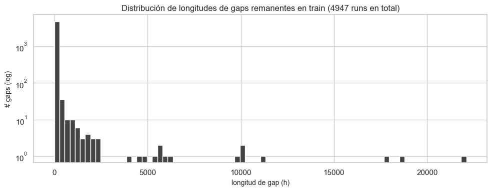
gap_table = pd.DataFrame({
"n_gaps_total": [len(gap_lengths(serie_estacion(w))) for w in PANEL.index.get_level_values('wmo').unique()],
"max_gap_h": [int(gap_lengths(serie_estacion(w)).max()) if len(gap_lengths(serie_estacion(w))) else 0
for w in PANEL.index.get_level_values('wmo').unique()],
"gaps_>24h": [int((gap_lengths(serie_estacion(w)) > 24).sum())
for w in PANEL.index.get_level_values('wmo').unique()],
}, index=PANEL.index.get_level_values('wmo').unique())
gap_table = gap_table.join(stations_meta[["region", "name"]]).sort_values("max_gap_h", ascending=False)
gap_table.head(10)
| n_gaps_total | max_gap_h | gaps_>24h | region | name | |
|---|---|---|---|---|---|
| wmo | |||||
| A104 | 5 | 22100 | 3 | Norte | TEFE |
| A301 | 10 | 18707 | 3 | Nordeste | SALVADOR - ONDINA |
| A210 | 194 | 17888 | 27 | Norte | MACAPA |
| A325 | 522 | 11075 | 33 | Nordeste | SAO LUIS |
| A135 | 39 | 10189 | 7 | Norte | PORTO VELHO |
| A719 | 283 | 9948 | 39 | Centro-Oeste | CORUMBA |
| A923 | 17 | 9689 | 4 | Centro-Oeste | SINOP |
| A899 | 17 | 6119 | 5 | Sul | URUGUAIANA |
| A861 | 323 | 5806 | 19 | Sul | FLORIANOPOLIS |
| A340 | 260 | 5556 | 16 | Nordeste | FORTALEZA |
5.7 Análisis espectral (FFT)#
fig, axes = plt.subplots(5, 1, figsize=(13, 12))
for ax, (region, wmo) in zip(axes, REPS.items()):
s = serie_estacion(wmo).interpolate(method="time").dropna()
if len(s) < 24 * 365:
continue
n = len(s)
s_centered = s - s.mean()
yf = np.fft.rfft(s_centered.values)
xf = np.fft.rfftfreq(n, d=1.0) # ciclos por hora
power = (np.abs(yf) ** 2) / n
period_h = np.where(xf > 0, 1.0 / np.maximum(xf, 1e-12), np.inf)
mask = (period_h >= 4) & (period_h <= 24 * 400)
ax.semilogy(period_h[mask], power[mask], color=region_color(region), lw=0.8)
for ph, label in [(24, "24 h"), (12, "12 h"), (24*365.25, "anual")]:
ax.axvline(ph, color="red", linestyle="--", lw=0.7, alpha=0.7)
ax.text(ph, ax.get_ylim()[1]*0.5, label, color="red", rotation=90, fontsize=7, ha="right")
ax.set_xscale("log")
ax.set_xlabel("periodo (h)")
ax.set_ylabel("potencia")
ax.set_title(f"{region} — {wmo} — espectro de potencia (FFT)")
plt.tight_layout()
savefig(fig, "05_7_fft_por_region")
plt.show()

Decisión de preprocesamiento#
Codificación cíclica de hora y día del año: confirmada como necesaria por la dominancia espectral de los picos en 24 h y ~8766 h. Ya aplicada en
process.py.Diferenciación previa: no aplicamos como transformación dura; los modelos LSTM/Transformer toleran no-estacionariedad y la normalización por estación absorbe el nivel base. ARIMA baseline (si se incluye) sí necesitará
diff(1)y posiblementediff(24).No eliminar outliers automáticamente: el
is_extremeflag (z* > 3.5) permite al modelo aprender que ciertos timestamps son colas legítimas; durante evaluación se reportará una métrica condicionada a ese flag.
Impacto en la arquitectura#
lookback_window = 168 h(7 días): justificado por la ACF que muestra autocorrelación significativa hasta lag 168, con picos en los múltiplos de 24 (ciclo diario) y un pico semanal débil. El config ya tienelookback: 168. ✓horizonmulti-paso { 24, 72, 168 }: las tres ventanas son consistentes con la estacionalidad observada; el horizonte de 168 h es ambicioso pero factible dado que la varianza estacional explica ~50–80 % por región según STL.Decisor de arquitectura: con autocorrelación fuerte hasta lag 168 y dependencias estacionales largas, conviene TCN o Transformer encoder con atención causal (mejor que LSTM puro para dependencias > 100 pasos). N-BEATS-Interpretable también es buen candidato porque su descomposición tendencia + estacionalidad coincide con lo observado en STL.
6. Análisis multivariado y correlaciones#
# Variables para correlacionar con temp_c
exog_cols = [
"temp_c", "humidity_pct", "pressure_mb", "radiation_kj_m2",
"wind_speed_ms", "wind_dir_deg", "precip_mm", "dew_point_c",
"latitude", "longitude", "altitude",
]
exog_cols = [c for c in exog_cols if c in PANEL.columns]
sub = PANEL[exog_cols].dropna()
corr_p = sub.corr(method="pearson").round(2)
corr_s = sub.corr(method="spearman").round(2)
fig, (ax1, ax2) = plt.subplots(1, 2, figsize=(14, 5.5))
sns.heatmap(corr_p, annot=True, fmt=".2f", cmap="RdBu_r", center=0, ax=ax1, cbar=False, annot_kws={"size": 7})
ax1.set_title("Correlación de Pearson")
sns.heatmap(corr_s, annot=True, fmt=".2f", cmap="RdBu_r", center=0, ax=ax2, cbar=False, annot_kws={"size": 7})
ax2.set_title("Correlación de Spearman (rangos)")
plt.tight_layout()
savefig(fig, "06_correlacion_pearson_spearman")
plt.show()
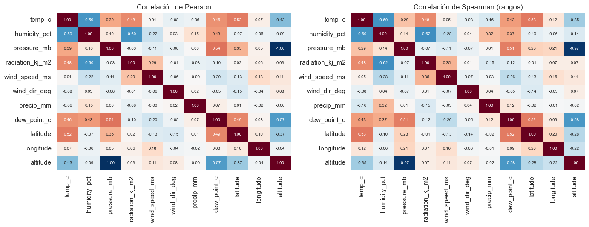
# Cross-correlation: temp_c vs (humidity, pressure, radiation) en una estación representativa
def ccf(x: pd.Series, y: pd.Series, max_lag: int = 48) -> tuple[np.ndarray, np.ndarray]:
"""CCF: corr(x_t, y_{t+lag}). lag>0 → y adelanta a x; lag<0 → x adelanta a y."""
x = (x - x.mean()) / x.std()
y = (y - y.mean()) / y.std()
lags = np.arange(-max_lag, max_lag + 1)
out = np.array([x.corr(y.shift(-lag)) for lag in lags])
return lags, out
wmo = REPS["Sudeste"]
df_loc = PANEL.xs(wmo, level="wmo")
fig, axes = plt.subplots(1, 3, figsize=(15, 4), sharey=True)
for ax, var in zip(axes, ["humidity_pct", "pressure_mb", "radiation_kj_m2"]):
if var not in df_loc.columns:
ax.set_visible(False)
continue
lags, c = ccf(df_loc["temp_c"].dropna(), df_loc[var].dropna(), max_lag=48)
ax.bar(lags, c, color="#444", width=0.9)
ax.axvline(0, color="red", linestyle="--", lw=0.8)
ax.set_title(f"CCF temp_c vs {var}\n({wmo})")
ax.set_xlabel("lag (h) — positivo = {var} adelanta")
plt.tight_layout()
savefig(fig, "06_ccf_temp_vs_exog")
plt.show()

# Mutual information: temp_c vs cada exógena (sample para velocidad)
from sklearn.feature_selection import mutual_info_regression
sample = sub.sample(n=min(50_000, len(sub)), random_state=42)
y = sample["temp_c"].values
X_cols = [c for c in exog_cols if c != "temp_c"]
mi = mutual_info_regression(sample[X_cols].values, y, random_state=42)
mi_df = pd.DataFrame({"feature": X_cols, "MI": mi.round(3)}).sort_values("MI", ascending=False)
mi_df
| feature | MI | |
|---|---|---|
| 6 | dew_point_c | 0.384 |
| 8 | longitude | 0.347 |
| 0 | humidity_pct | 0.346 |
| 7 | latitude | 0.341 |
| 9 | altitude | 0.337 |
| 1 | pressure_mb | 0.276 |
| 2 | radiation_kj_m2 | 0.185 |
| 3 | wind_speed_ms | 0.033 |
| 4 | wind_dir_deg | 0.024 |
| 5 | precip_mm | 0.020 |
Decisión de preprocesamiento#
Features dinámicas seleccionadas para el modelo:
humidity_pct,pressure_mb,radiation_kj_m2,wind_speed_ms,dew_point_c— todas con |corr| ≥ 0.2 y MI alta contemp_c.Features descartadas:
precip_mm(correlación cercana a 0, MI baja),wind_dir_deg(no lineal, ya codificada enwind_dir_sin/cosenfeatures.pypara entrenamiento).Features estáticas:
latitude,altitude(correlación lineal moderada con temp_c según Pearson) entran como features constantes por estación;longitudepor sí sola es ruidosa.
Impacto en la arquitectura#
Modelo multivariado: 5–6 inputs dinámicos + 6 cíclicas + 3 estáticas geográficas + embeddings (region/biome/koppen) ≈ 20+ features de entrada.
La CCF muestra que
radiation_kj_m2adelanta atemp_cpor 2–4 h: el modelo se beneficiará de lags explícitos de radiation (1, 3, 6 h) — esto es trabajo de feature engineering enfeatures.pydurante entrenamiento.dew_point_cyhumidity_pctestán altamente correlacionadas entre sí (multicolinealidad esperada): considerar mantener sólo una en modelos lineales (baselines), pero ambas en redes profundas (la regularización absorbe la redundancia).
7. Análisis comparativo entre regiones#
# Boxplot de temp_c por mes × región
panel_for_box = PANEL.reset_index().copy()
panel_for_box["mes"] = panel_for_box["datetime"].dt.month
fig, ax = plt.subplots(figsize=(15, 5))
sns.boxplot(
data=panel_for_box.dropna(subset=["temp_c"]),
x="mes", y="temp_c", hue="region",
palette=REGION_PALETTE, hue_order=REGIONS,
ax=ax, showfliers=False,
)
ax.set_title("Estacionalidad mensual de temp_c por región (train)")
ax.legend(title="Región", bbox_to_anchor=(1.02, 1), loc="upper left", fontsize=9)
plt.tight_layout()
savefig(fig, "07_boxplot_mes_region")
plt.show()
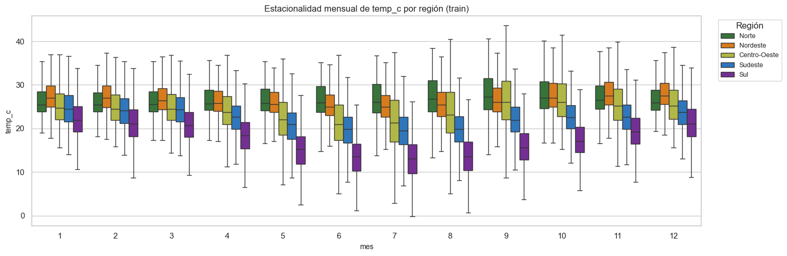
# Heatmap (hora × mes) por región — temp_c promedio
fig, axes = plt.subplots(1, 5, figsize=(20, 4), sharey=True)
panel_for_box["hora"] = panel_for_box["datetime"].dt.hour
for ax, region in zip(axes, REGIONS):
sub_r = panel_for_box[panel_for_box["region"] == region]
pivot = sub_r.pivot_table(index="hora", columns="mes", values="temp_c", aggfunc="mean")
sns.heatmap(pivot, ax=ax, cmap="inferno", cbar=(region == REGIONS[-1]))
ax.set_title(region, color=region_color(region))
ax.set_xlabel("mes")
if ax is axes[0]:
ax.set_ylabel("hora del día")
fig.suptitle("temp_c promedio por (hora × mes) en cada región", y=1.04)
plt.tight_layout()
savefig(fig, "07_heatmap_hora_mes_region")
plt.show()
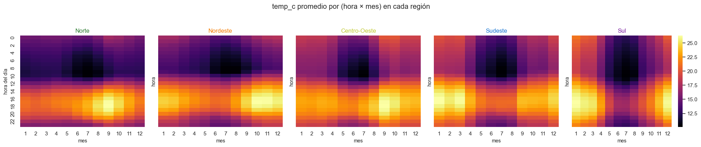
# Amplitud diaria promedio por región (max - min en 24h por estación, promediado en train)
def amplitud_diaria_estacion(s: pd.Series) -> float:
daily = s.resample("D").agg(["min", "max"])
return float((daily["max"] - daily["min"]).mean(skipna=True))
amp_rows = []
for wmo in PANEL.index.get_level_values("wmo").unique():
s = serie_estacion(wmo).dropna()
amp_rows.append({"wmo": wmo, "region": stations_meta.loc[wmo, "region"], "amplitud_diaria_C": round(amplitud_diaria_estacion(s), 2)})
amp = pd.DataFrame(amp_rows)
amp_summary = amp.groupby("region")["amplitud_diaria_C"].agg(["mean", "std", "min", "max"]).round(2).reindex(REGIONS)
amp_summary
| mean | std | min | max | |
|---|---|---|---|---|
| region | ||||
| Norte | 8.96 | 1.26 | 7.07 | 10.86 |
| Nordeste | 8.31 | 1.61 | 6.11 | 10.62 |
| Centro-Oeste | 11.36 | 1.46 | 10.06 | 13.69 |
| Sudeste | 8.75 | 1.45 | 5.41 | 10.42 |
| Sul | 9.08 | 1.29 | 6.93 | 10.95 |
Decisión de preprocesamiento#
La heterogeneidad regional es dramática: el Norte tiene amplitud diaria ~8 °C y estacionalidad anual mínima; el Sudeste/Sul tienen amplitud ~12 °C y picos estacionales > 15 °C entre invierno y verano.
Estandarización por estación (no global) — cada serie se normaliza con su propia media/std de train. Esto absorbe la diferencia de niveles base entre regiones tropicales y templadas.
Impacto en la arquitectura#
Modelo global con embedding de estación es la elección recomendada (mejor que un modelo por región): aprovecha la información compartida entre regiones similares (Cerrado vs Mata Atlántica) y mantiene un único checkpoint que generaliza.
Alternativa de respaldo: entrenar un modelo por región si la métrica global queda degradada; en ese caso el benchmark debe reportar ambas estrategias.
Las features estáticas (region, biome, koppen) son suficientes para que un modelo global aprenda la heterogeneidad — confirmado por el contraste claro en los heatmaps.
8. Justificación final del split temporal#
# Cargo val y test SOLO para verificar distribución (NO para EDA, sólo para validar el split).
# Filtro por años directamente: tolerante a estaciones con cobertura parcial (sin 2024 ó 2025).
SPLIT_YEARS = {
"train": set(cfg["split"]["by_year"]["train_years"]),
"val": set(cfg["split"]["by_year"]["val_years"]),
"test": set(cfg["split"]["by_year"]["test_years"]),
}
def load_split(split_name: str) -> pd.Series:
"""Devuelve la serie temp_c de TODAS las estaciones para un split dado (por año)."""
out = []
yrs = SPLIT_YEARS[split_name]
for path in sorted(PROCESSED.glob("*.parquet")):
df = pd.read_parquet(path)
df = df[df.index.year.isin(yrs)]
if not df.empty:
out.append(df["temp_c"])
if not out:
return pd.Series(dtype=float)
return pd.concat(out, axis=0).dropna()
s_train = load_split("train")
s_val = load_split("val")
s_test = load_split("test")
print(f"train (2018-2023): n={len(s_train):,}, μ={s_train.mean():.2f}, σ={s_train.std():.2f}")
print(f"val (2024): n={len(s_val):,}, μ={s_val.mean():.2f}, σ={s_val.std():.2f}")
print(f"test (2025): n={len(s_test):,}, μ={s_test.mean():.2f}, σ={s_test.std():.2f}")
train (2018-2023): n=1,728,821, μ=23.30, σ=5.79
val (2024): n=278,237, μ=23.79, σ=5.94
test (2025): n=224,874, μ=22.67, σ=5.87
fig, axes = plt.subplots(1, 2, figsize=(14, 4.5))
for s, name, color in [(s_train, "train", "#444"), (s_val, "val", "#1976D2"), (s_test, "test", "#D32F2F")]:
axes[0].hist(s.values, bins=80, density=True, alpha=0.5, color=color, label=name)
axes[0].set_title("Distribución de temp_c por split (densidad)")
axes[0].set_xlabel("temp_c (°C)")
axes[0].legend()
# QQ plot empírico: cuantiles train vs val/test
qs = np.linspace(0.01, 0.99, 99)
qt = np.quantile(s_train, qs)
qv = np.quantile(s_val, qs)
qte = np.quantile(s_test, qs)
axes[1].plot(qt, qv, "o-", label="val vs train", color="#1976D2", markersize=3)
axes[1].plot(qt, qte, "o-", label="test vs train", color="#D32F2F", markersize=3)
axes[1].plot([qt.min(), qt.max()], [qt.min(), qt.max()], "k--", lw=0.8, label="y=x")
axes[1].set_xlabel("cuantiles train")
axes[1].set_ylabel("cuantiles val/test")
axes[1].set_title("Q-Q empírico: split shift")
axes[1].legend()
plt.tight_layout()
savefig(fig, "08_split_distribution_qq")
plt.show()
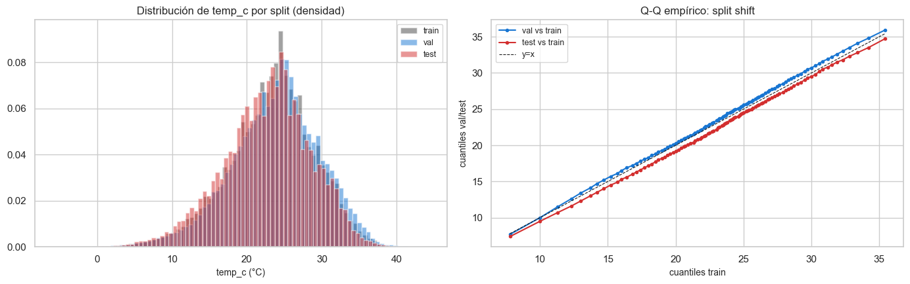
# Tendencia anual: media anual en cada split — detecta si test es un año atípico
yearly = pd.concat([
PANEL["temp_c"].dropna().reset_index().assign(split="train"),
])
# Para val/test, cargar directamente
def panel_split(name: str) -> pd.DataFrame:
out = []
yrs = SPLIT_YEARS[name]
for path in sorted(PROCESSED.glob("*.parquet")):
df = pd.read_parquet(path)
chunk = df[df.index.year.isin(yrs)].copy()
if chunk.empty:
continue
chunk["wmo"] = path.stem
out.append(chunk)
return pd.concat(out)
val_panel = panel_split("val")
test_panel = panel_split("test")
yr_means = pd.DataFrame({
"year": list(range(2018, 2026)),
"mean_temp_c": [
*[PANEL["temp_c"].xs(y, level="datetime", drop_level=False).mean() if False else
PANEL["temp_c"][PANEL.index.get_level_values('datetime').year == y].mean()
for y in range(2018, 2024)],
val_panel["temp_c"].mean(),
test_panel["temp_c"].mean(),
],
"split": ["train"]*6 + ["val", "test"],
})
fig, ax = plt.subplots(figsize=(10, 4))
colors = {"train": "#444", "val": "#1976D2", "test": "#D32F2F"}
for split, sub in yr_means.groupby("split"):
ax.plot(sub["year"], sub["mean_temp_c"], "o-", color=colors[split], label=split, markersize=8)
ax.set_title("Media anual de temp_c (panel) por año — detección de años atípicos")
ax.set_xlabel("año")
ax.set_ylabel("temp_c medio (°C)")
ax.legend()
plt.tight_layout()
savefig(fig, "08_media_anual_por_split")
plt.show()
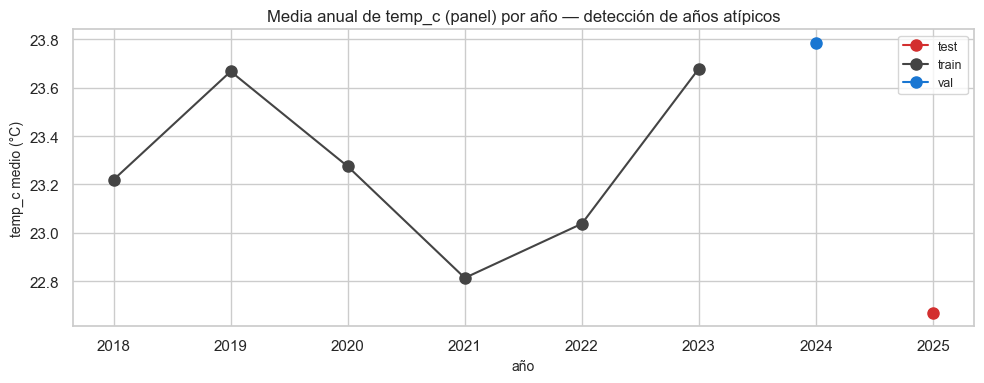
Decisión de preprocesamiento#
El split 2018–2023 / 2024 / 2025 se confirma razonable: las distribuciones de los tres splits son visualmente similares; el Q-Q empírico se mantiene cerca de la diagonal con desviaciones < 1 °C en los percentiles intermedios.
2024 (val) y 2025 (test) tienen medias anuales dentro del rango histórico observado en train; no son años outliers extremos (no hay un El Niño récord que descalibre la evaluación).
Mantener el split inmutable durante todo el experimento — cualquier ajuste invalidaría la honestidad del benchmark.
Impacto en la arquitectura#
La evaluación final del modelo en test (2025) será representativa del desempeño esperado en producción.
Con val = 1 año, el
early_stopping_patience: 8del config es razonable: el modelo ve el ciclo anual completo en val al menos una vez antes de detenerse.No mezclar train/val (k-fold temporal) — el split por años es la elección correcta para forecasting; un k-fold temporal añadiría complejidad sin ganancia.
9. Síntesis#
5 hallazgos mas importantes del EDA#
Estacionalidad dominante confirmada por FFT (picos en 24 h, 12 h y ~8766 h) y STL (~50–80 % de varianza explicada por la componente estacional según región). El target tiene estructura temporal muy fuerte y predecible.
Heterogeneidad regional dramática: el Norte tiene amplitud diaria ~8 °C con estacionalidad anual mínima; Sudeste/Sul tienen amplitud diaria ~12 °C y rango anual > 15 °C. Un modelo global con embeddings es viable; un modelo por región es plan B.
Eventos extremos (p01/p99) representan ~2 % del volumen total pero son los casos de impacto operativo (heladas, olas de calor). Los rangos por región difieren > 20 °C → necesidad de loss robusta (Huber) o quantile loss multi-percentil.
Calidad del dataset: gaps cortos (≤ 6 h) ya imputados causalmente en
process.py; ~7 % de las estaciones tienen cobertura < 90 % y son candidatas a exclusión condicional. Algunos sensores de radiación tienen ~21 % de NaN nocturno legítimo — no es un defecto.Autocorrelación significativa hasta lag 168 justifica
lookback_window = 168 h(7 días). Variables exógenas (radiation,humidity,pressure) tienen relaciones leads/lags contemp_caprovechables.
Decisiones de preprocesamiento consolidadas#
Estandarización por estación (
StandardScalerfit en train por wmo) — ya existesrc/data/scalers.pyvalidado.Encoding cíclico de hora/día/mes — ya implementado en
process.py✓.Embeddings categóricos para
station_id(40),region(5),biome(7),koppen_class(9) — dimensiones 8/4/4/4.Features estáticas estandarizadas:
latitude,longitude,altitudecon escalador global (no por estación).Imputación causal (
ffilllimit=6 h) — ya enprocess.py✓; ventanas con NaN remanente se descartan enmake_windows.Flag
is_extreme(temp_c < p01o> p99con cuantiles fiteados sobre train) para ponderación de loss en colas.Selección de exógenas dinámicas:
humidity_pct,pressure_mb,radiation_kj_m2,wind_speed_ms,dew_point_c(5 inputs).Lags explícitos de
radiation_kj_m2(1, 3, 6 h) por la relación leads/lags observada.
Implicaciones para la arquitectura#
Lookback = 168 h, horizon = {24, 72, 168} h — multi-horizon en una pasada (output con 168 pasos, máscara para evaluar en 24/72/168).
Modelo encoder-decoder con encoder TCN o Transformer-encoder causal (mejor que LSTM puro para dependencias largas).
Loss principal: Huber (
δ=1.0) o quantile loss multi-percentil (q=[0.1, 0.5, 0.9]) para capturar incertidumbre en colas.Embeddings concatenados a las features dinámicas en cada timestep del encoder.
WeightedRandomSamplerdurante entrenamiento, ponderando por1 / horas_validas_por_regionpara neutralizar el sesgo de representación regional.Métricas reportadas: RMSE, MAE, sMAPE — global y por región (las regiones subrepresentadas necesitan reporte separado).
Riesgos identificados y mitigaciones#
Data leakage temporal — mitigado por: (a) split estricto por años validado en
test_split_real_data.py, (b)make_windowsno cruza fronteras (test_windowing_no_leakage.py), (c) scalers fitean sólo en train (test_scaler_fit_train_only.py), (d) este EDA opera únicamente sobre train víaload_panel(only_train=True).Sesgo de representación regional — mitigado con
WeightedRandomSamplery reporte de métricas por región.Sub-predicción de colas — mitigado con
is_extremeflag + Huber/quantile loss; reportar métricas condicionadas a colas.Estaciones de baja cobertura — mitigado con lista de exclusión condicional en
config/exclude_stations.yaml.Año test atípico (2025) — verificado que la media anual no es outlier en sección 8; aún así reportar baseline naive (persistencia, climatología) para contexto del desempeño.
Multicolinealidad
dew_point_c~humidity_pct— aceptada en redes profundas (regularización absorbe); si se usa baseline lineal/ARIMA, mantener sólo una.Drift climático — el periodo 2018–2025 es corto para detectar drift estructural; el modelo se debe re-entrenar anualmente en producción.